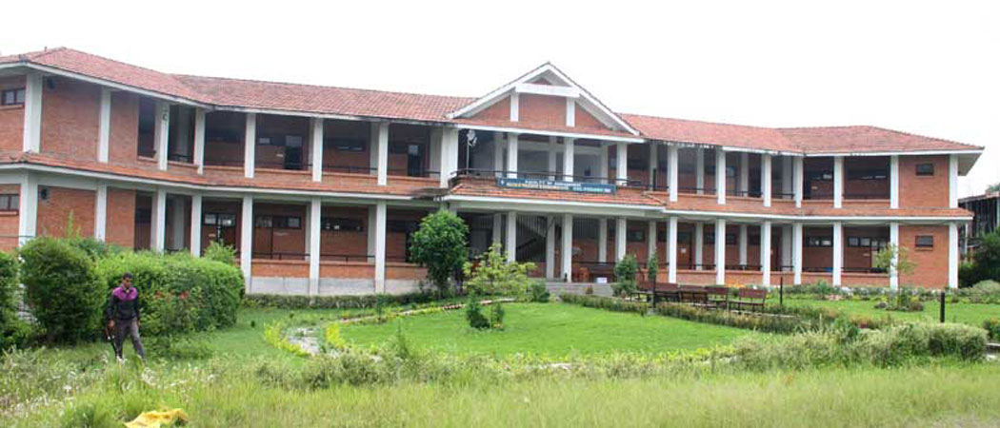

Tribhuvan University (TU), which was established in 1959, is the first national institution of higher education in Nepal. The Central Administrative Office and the Central Campus of the university are located on the north eastern facade of Kirtipur, an ancient and small town located five kilometers away from Kathmandu city centre. There are 39 central departments and 4 research centres in TU, and out of them 31 departments and 3 research centres are located at Kirtipur. The university at Kirtipur is spread over an area of 154.77 hectares (3042-5-2 ropanis).
After the second democratic movement of 2006, the Prime Minister of Nepal is the ceremonial chief, the Chancellor of the University, whereas
the Minister of Education is the Pro-Chancellor. The Vice Chancellor is the Chief Executive of the university. He is assisted by the Rector in academic programmes and the Registrar in financial management and general administration.
Tribhuvan University is a non-profit making autonomous institution funded by the Government of Nepal. On January 8, 2013, the government of Nepal has principally agreed to declare Tribhuvan University as the Central University.